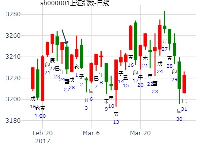

主帖标题: T-Z-G-D上证指数擂台赛第五场第2局（2020年1月21日）G方
公历时间：2020年1月20日14时38分
干 支：己亥年 丁丑月 壬戌日 丁未时
旬 空：辰巳 申酉 子丑 寅卯
坤宫：地泽临 坎宫：水泽节（六合）
六神 【本 卦】 【变 卦】
白虎 ▄▄ ▄▄ 子孙癸酉金 ▄▄ ▄▄ 妻财戊子水
螣蛇 ▄▄ ▄▄ 妻财癸亥水 应× ▄▄▄▄▄ 兄弟戊戌土
勾陈 ▄▄ ▄▄ 兄弟癸丑土 ▄▄ ▄▄ 子孙戊申金 应
朱雀 ▄▄ ▄▄ 兄弟丁丑土 ▄▄ ▄▄ 兄弟丁丑土
青龙 ▄▄▄▄▄ 官鬼丁卯木 世 ▄▄▄▄▄ 官鬼丁卯木
玄武 ▄▄▄▄▄ 父母丁巳火 ▄▄▄▄▄ 父母丁巳火 世
年卦：2022年1.1日到12。31日上证。
时间: 2022-01-01 18时39分
干支: 辛丑年庚子月甲寅日 (旬空: 子丑 )
地泽临 水泽节
六神 伏神 本 卦 变 卦
玄武 ▅▅ ▅▅ 子孙酉金 ▅▅ ▅▅ 妻财子水
白虎 ▅▅ ▅▅ 妻财亥水 应Ｘ→ ▅▅▅▅▅ 兄弟戌土
腾蛇 ▅▅ ▅▅ 兄弟丑土 ▅▅ ▅▅ 子孙申金 应
勾陈 ▅▅ ▅▅ 兄弟丑土 ▅▅ ▅▅ 兄弟丑土
朱雀 ▅▅▅▅▅ 官鬼卯木 世 ▅▅▅▅▅ 官鬼卯木
青龙 ▅▅▅▅▅ 父母巳火 ▅▅▅▅▅ 父母巳火 世
六五：知临，大君之宜，吉。
2022-01-01 这个卦重点反应下半年亥月跌不动，要涨。
财化兄，财值班时不怕兄弟。
2月第5周：临之节。财化兄亥化戌。月合，一个月有力
时间: 2017-02-26 戌时
干支: 丁酉年壬寅月甲申日甲戌时 (旬空: 午未 )
地泽临 水泽节
六神 伏神 本 卦 变 卦
玄武 ▅▅ ▅▅ 子孙酉金 ▅▅ ▅▅ 妻财子水
白虎 ▅▅ ▅▅ 妻财亥水 应Ｘ→ ▅▅▅▅▅ 兄弟戌土
腾蛇 ▅▅ ▅▅ 兄弟丑土 ▅▅ ▅▅ 子孙申金 应
勾陈 ▅▅ ▅▅ 兄弟丑土 ▅▅ ▅▅ 兄弟丑土
朱雀 ▅▅▅▅▅ 官鬼卯木 世 ▅▅▅▅▅ 官鬼卯木
青龙 ▅▅▅▅▅ 父母巳火 ▅▅▅▅▅ 父母巳火 世
六五：知临，大君之宜，吉。

主帖标题: 上证2020 02 03
出生：2020 年 性别：男 占事：没填
排卦：元亨利贞网六爻在线排盘系统 http://www.china95.net
公历起卦时间：2020年2月2日20时27分 (在线摇卦)
干支：己亥年 丁丑月 乙亥日 丙戌时 （日空：申酉）
神煞：驿马－巳 桃花－子 日禄－卯 贵人－子，申
坤宫：地泽临 坎宫：水泽节 (六合)
玄武 子孙癸酉金 ▅▅ ▅▅ 妻财戊子水 ▅▅ ▅▅
白虎 妻财癸亥水 ▅▅ ▅▅ 应 ╳→ 兄弟戊戌土 ▅▅▅▅▅
腾蛇 兄弟癸丑土 ▅▅ ▅▅ 子孙戊申金 ▅▅ ▅▅ 应
勾陈 兄弟丁丑土 ▅▅ ▅▅ 兄弟丁丑土 ▅▅ ▅▅
朱雀 官鬼丁卯木 ▅▅▅▅▅ 世 官鬼丁卯木 ▅▅▅▅▅
青龙 父母丁巳火 ▅▅▅▅▅ 父母丁巳火 ▅▅▅▅▅ 世
此处暴跌，应到了动变之象，还是丑土也被合起？
占事：上证指数走势，2019年4月8日——12日，仁圆八卦原创
时间: 2019-04-08 11时37分
干支: 己亥年戊辰月乙亥日 (旬空: 申酉 )
地泽临 水泽节
六神 伏神 本 卦 变 卦
玄武 ▅▅ ▅▅ 子孙酉金 ▅▅ ▅▅ 妻财子水
白虎 ▅▅ ▅▅ 妻财亥水 应Ｘ→ ▅▅▅▅▅ 兄弟戌土
腾蛇 ▅▅ ▅▅ 兄弟丑土 ▅▅ ▅▅ 子孙申金 应
勾陈 ▅▅ ▅▅ 兄弟丑土 ▅▅ ▅▅ 兄弟丑土
朱雀 ▅▅▅▅▅ 官鬼卯木 世 ▅▅▅▅▅ 官鬼卯木
青龙 ▅▅▅▅▅ 父母巳火 ▅▅▅▅▅ 父母巳火 世
六五：知临，大君之宜，吉。
临之节，财化兄。
参见科威尔短线见顶。
主帖标题: 大盘以及三个个股周挂和板块
沪深300下周 电脑摇卦
庚子 庚辰 甲申 壬申 (午未空) 庚子年三月十九(2020/04/11 16:23:44)
地泽临 水泽节
玄武 子孙酉金 ∥ 妻财子水 ∥
白虎 妻财癸亥 × 应 兄弟戌土 ／
腾蛇 兄弟丑土 ∥ 子孙戊申 ∥ 应
勾陈 兄弟丑土 ∥ 兄弟丑土 ∥
朱雀 官鬼卯木 ／ 坤 官鬼卯木 ／
青龙 父母巳火 ／ 父母巳火 ／ 坎
1跌2涨34不知道5涨
以下三个股都是肉手拿铜钱
600535
庚子 庚辰 甲申 壬申 (午未空) 庚子年三月十九(2020/04/11 16:23:44)
天风姤
玄武 父母戌土 ／
白虎 兄弟壬申 ／
腾蛇 官鬼午火 ／ 应
勾陈 兄弟酉金 ／
妻财甲寅：朱雀 子孙亥水 ／
青龙 父母丑土 ∥ 乾
600332
庚子 庚辰 甲申 壬申 (午未空) 庚子年三月十九(2020/04/11 16:23:44)
水雷屯 兑为泽
玄武 兄弟子水 ∥ 官鬼未土 ∥ 兑
白虎 官鬼戌土 ／ 应 父母酉金 ／
腾蛇 父母戊申 × 兄弟丁亥 ／
妻财午火：勾陈 官鬼辰土 ∥ 官鬼丑土 ∥ 应
朱雀 子孙寅木 × 坎 子孙卯木 ／
青龙 兄弟子水 ／ 妻财巳火 ／
002566
庚子 庚辰 甲申 壬申 (午未空)
庚子年三月十九(2020/04/11 16:23:44)
水雷屯 水地比
玄武 兄弟子水 ∥ 兄弟子水 ∥ 应
白虎 官鬼戌土 ／ 应 官鬼戌土 ／
腾蛇 父母戊申 ∥ 父母戊申 ∥
妻财午火：勾陈 官鬼辰土 ∥ 子孙卯木 ∥ 坤
朱雀 子孙寅木 ∥ 世 妻财乙巳 ∥
青龙 兄弟子水 ○ 官鬼未土 ∥
下周什么板块最强 电脑自动
庚子 庚辰 甲申 壬申 (午未空) 庚子年三月十九(2020/04/11 16:23:44)
山天大畜 地火明夷
玄武 官鬼寅木 ○ 子孙酉金 ∥
白虎 妻财子水 ∥ 应 妻财癸亥 ∥
腾蛇 兄弟丙戌 ∥ 兄弟丑土 ∥ 坎
子孙申金：勾陈 兄弟辰土 ／ 妻财亥水 ／
父母午火：朱雀 官鬼甲寅 ○ 艮 兄弟丑土 ∥
青龙 妻财子水 ／ 官鬼卯木 ／ 应
主帖标题: 主题：5月3日黄金的走势 1467
主题：5月3日美国非农数据对黄金的价格的影响
癸巳 丙辰 己巳 壬申 (日空:戌亥 时空:戌亥 ) 癸巳年三月廿四(2013/05/03 16:13:45)
地泽临 水泽节
勾陈 子孙酉金 ∥ 妻财子水 ∥
朱雀 妻财亥水 × 应 兄弟戌土 ／
青龙 兄弟丑土 ∥ 子孙申金 ∥ 应
玄武 兄弟丑土 ∥ 兄弟丑土 ∥
白虎 官鬼卯木 ／ 世 官鬼卯木 ／
腾蛇 父母巳火 ／ 父母巳火 ／ 世
大盘未月300指数走势。临之节。财化兄。.md
时间: 2022-07-11 8时28分
干支: 壬寅年丁未月乙丑日庚辰时 (旬空: 戌亥 )
地泽临 水泽节
六神 伏神 本 卦 变 卦
玄武 ▅▅ ▅▅ 子孙酉金 ▅▅ ▅▅ 妻财子水
白虎 ▅▅ ▅▅ 妻财亥水 应Ｘ→ ▅▅▅▅▅ 兄弟戌土
腾蛇 ▅▅ ▅▅ 兄弟丑土 ▅▅ ▅▅ 子孙申金 应
勾陈 ▅▅ ▅▅ 兄弟丑土 ▅▅ ▅▅ 兄弟丑土
朱雀 ▅▅▅▅▅ 官鬼卯木 世 ▅▅▅▅▅ 官鬼卯木
青龙 ▅▅▅▅▅ 父母巳火 ▅▅▅▅▅ 父母巳火 世
六五：知临，大君之宜，吉。
占事: 下周大盘 公历时间：2009年8月2日11时41分
干支：己丑年 辛未月 己卯日 庚午时
旬空：午未 戌亥 申酉 戌亥
坤宫：地泽临 坎宫：水泽节（六合）
六神 【本 卦】 【变 卦】
勾陈 ▄▄ ▄▄ 子孙癸酉金 ▄▄ ▄▄ 妻财戊子水
朱雀 ▄▄ ▄▄ 妻财癸亥水 应X-> ▄▄▄▄▄ 兄弟戊戌土
青龙 ▄▄ ▄▄ 兄弟癸丑土 ▄▄ ▄▄ 子孙戊申金 应
玄武 ▄▄ ▄▄ 兄弟丁丑土 ▄▄ ▄▄ 兄弟丁丑土
白虎 ▄▄▄▄▄ 官鬼丁卯木 世 ▄▄▄▄▄ 官鬼丁卯木
螣蛇 ▄▄▄▄▄ 父母丁巳火 ▄▄▄▄▄ 父母丁巳火 世
六五：知临，大君之宜，吉。 象曰：大君之宜，行中之谓也。
加精。经典卦例，09年3478见顶卦例。
临之节，测周大盘。财化兄，亥化戌，断跌。
暴跌之卦，结果只看卦辞吉了。没看到八月有凶。与财化克。
8月3号：辰日， 冲戌土， （也墓亥水），但还是涨。看来是冲戌土为主。
8月4号：巳日， 跌。（冲弱财亥水，生兄弟戌土，跌）
8月5号：午日，跌
8月6号：未日，跌。
8月7号：申日，跌。
共性：寅日有点涨。
主帖标题: 2016-08-26上证大盘...
公历：2016年08月26日09时10分 星期五
干支：丙申 丙申 庚辰 辛巳 报数起局阴六局
旬空：辰巳 辰巳 申酉 申酉 旬首：甲戌
值符天禽在三宫 值使死门在七宫 超级奇门排宫法
┌─────────┬─────────┬─────────┐
│丁 九天 │己 九地 │乙 玄武○ │
│ 天柱 乙 │ 天心 戊 │ 天蓬 癸 │
│ 伤门 庚 │ 杜门 丁 │ 景门 壬 禽己│
│太阴 │螣蛇 │值符 │
├─────────┼─────────┼─────────┤
│丙 值符 │癸 │辛 白虎○ │
│ 天芮 壬 禽己│ │ 天任 丙 │
│ 生门 辛 │ 己│ 死门 乙 │
│六合 │ │九天 │
├─────────┼─────────┼─────────┤
│庚 螣蛇 │戊 太阴 │壬 六合 马│
│ 天英 丁 │ 天辅 庚 │ 天冲 辛 │
│ 休门 丙 │ 开门 癸 │ 惊门 戊 │
│白虎 │玄武 │九地 │
└─────────┴─────────┴─────────┘
干支：丙申年 丙申月 庚辰日 辛巳时 （日空：申酉）
神煞：驿马－寅 桃花－酉 日禄－申 贵人－丑，未
坤宫：地泽临 坎宫：水泽节 (六合)
六神 伏神 本 卦 变 卦
腾蛇 子孙癸酉金 ▅▅ ▅▅ 妻财戊子水 ▅▅ ▅▅
勾陈 妻财癸亥水 ▅▅ ▅▅ 应 ╳→ 兄弟戊戌土 ▅▅▅▅▅
朱雀 兄弟癸丑土 ▅▅ ▅▅ 子孙戊申金 ▅▅ ▅▅ 应
青龙 兄弟丁丑土 ▅▅ ▅▅ 兄弟丁丑土 ▅▅ ▅▅
玄武 官鬼丁卯木 ▅▅▅▅▅ 世 官鬼丁卯木 ▅▅▅▅▅
白虎 父母丁巳火 ▅▅▅▅▅ 父母丁巳火 ▅▅▅▅▅ 世周预计最低3060[防已破，25日最低3041.5接下来还是要防3030、看此局有接触的像，希望明天开局先破再拉。但此局的像、早盘会震荡向上、先拉高，下午要看大金融如何走，如果券商、权重走高、则中阳可期，反之则中阴。注意当日盘面，王阳明子，如果您要查看本帖隐藏内容请回复预测仅供参考、操作自负。
817问科威尔短线？临之节。诸葛骰子。
时间: 2022-08-17 6时58分
干支: 壬寅年戊申月壬寅日 (旬空: 辰巳 )
地泽临 水泽节
六神 伏神 本 卦 变 卦
白虎 ▅▅ ▅▅ 子孙酉金 ▅▅ ▅▅ 妻财子水
腾蛇 ▅▅ ▅▅ 妻财亥水 应Ｘ→ ▅▅▅▅▅ 兄弟戌土
勾陈 ▅▅ ▅▅ 兄弟丑土 ▅▅ ▅▅ 子孙申金 应
朱雀 ▅▅ ▅▅ 兄弟丑土 ▅▅ ▅▅ 兄弟丑土
青龙 ▅▅▅▅▅ 官鬼卯木 世 ▅▅▅▅▅ 官鬼卯木
玄武 ▅▅▅▅▅ 父母巳火 ▅▅▅▅▅ 父母巳火 世
出生年:1971 性别：女 占事：酉月大盘趋势
起卦方式：手动摇卦 六爻排盘http://paipan.9d19.com/6y.asp
公历时间：2016年9月5日9时30分
干 支：丙申年 丙申月 庚寅日 辛巳时
旬 空：辰巳 辰巳 午未 申酉
神 煞：驿马─申 桃花─卯 日禄─申 贵人─丑，未
坤宫：地泽临 坎宫：水泽节（六合）
螣蛇 ▄▄ ▄▄ 子孙癸酉金 ▄▄ ▄▄ 妻财戊子水
勾陈 ▄▄ ▄▄ 妻财癸亥水 应× ▄▄▄▄▄ 兄弟戊戌土
朱雀 ▄▄ ▄▄ 兄弟癸丑土 ▄▄ ▄▄ 子孙戊申金 应
青龙 ▄▄ ▄▄ 兄弟丁丑土 ▄▄ ▄▄ 兄弟丁丑土
玄武 ▄▄▄▄▄ 官鬼丁卯木 世 ▄▄▄▄▄ 官鬼丁卯木
白虎 ▄▄▄▄▄ 父母丁巳火 ▄▄▄▄▄ 父母丁巳火 世
主帖标题: 周易与金融------6
002261买进如何
公历起卦时间：2013年11月16日13时56分 (手工指定)
干支：癸巳年 癸亥月 丙戌日 乙未时 （日空：午未）
神煞：驿马－申 桃花－卯 日禄－巳 贵人－酉，亥
坤宫：地泽临 坎宫：水泽节 (六合)
六神 伏神 本 卦 变 卦
青龙 子孙癸酉金 ▅▅ ▅▅ 妻财戊子水 ▅▅ ▅▅
玄武 妻财癸亥水 ▅▅ ▅▅ 应 ╳→ 兄弟戊戌土 ▅▅▅▅▅
白虎 兄弟癸丑土 ▅▅ ▅▅ 子孙戊申金 ▅▅ ▅▅ 应
腾蛇 兄弟丁丑土 ▅▅ ▅▅ 兄弟丁丑土 ▅▅ ▅▅
勾陈 官鬼丁卯木 ▅▅▅▅▅ 世 官鬼丁卯木 ▅▅▅▅▅
朱雀 父母丁巳火 ▅▅▅▅▅ 父母丁巳火 ▅▅▅▅▅ 世
亥财生世化戍土回头克，亥临月建，依然有用。可买进以待辰日之吉。
占事：隧道股份11.3--11.7 悟道喜悦
公历时间：2014年11月1日17时45分
干 支：甲午年 甲戌月 丙子日 丁酉时 旬空：辰巳 申酉 (申酉) 辰巳
坤宫：地泽临 坎宫：水泽节（六合）
六神 【本 卦】 【变 卦】
青龙 ▄▄ ▄▄ 子孙癸酉金 ▄▄ ▄▄ 妻财戊子水
玄武 ▄▄ ▄▄ 妻财癸亥水 应X-> ▄▄▄▄▄ 兄弟戊戌土
白虎 ▄▄ ▄▄ 兄弟癸丑土 ▄▄ ▄▄ 子孙戊申金 应
螣蛇 ▄▄ ▄▄ 兄弟丁丑土 ▄▄ ▄▄ 兄弟丁丑土
勾陈 ▄▄▄▄▄ 官鬼丁卯木 世 ▄▄▄▄▄ 官鬼丁卯木
朱雀 ▄▄▄▄▄ 父母丁巳火 ▄▄▄▄▄ 父母丁巳火 世
主帖标题: 后两天大盘
公历起卦时间：2022年11月23日13时53分 (电脑自动)
干支：壬寅年 辛亥月 庚辰日 癸未时 （日空：申酉）
坤宫：地泽临 坎宫：水泽节 (六合)
六神 伏神 本 卦 变 卦
螣蛇 子孙癸酉金 ▅▅ ▅▅ 妻财戊子水 ▅▅ ▅▅
勾陈 妻财癸亥水 ▅▅ ▅▅ 应 ╳→ 兄弟戊戌土 ▅▅▅▅▅
朱雀 兄弟癸丑土 ▅▅ ▅▅ 子孙戊申金 ▅▅ ▅▅ 应
青龙 兄弟丁丑土 ▅▅ ▅▅ 兄弟丁丑土 ▅▅ ▅▅
玄武 官鬼丁卯木 ▅▅▅▅▅ 世 官鬼丁卯木 ▅▅▅▅▅
白虎 父母丁巳火 ▅▅▅▅▅ 父母丁巳火 ▅▅▅▅▅ 世
假如卦准，一如我们预测的，巳日需严重注意。

宁波港下周涨跌，临之节。当月旺而被克。还是要跌。起卦方式：手动摇卦
公历时间：2016年12月1日14时29分
干 支：丙申年 己亥月 丁巳日 丁未时
旬 空：辰巳 辰巳 (子丑) 寅卯
坤宫：地泽临 坎宫：水泽节（六合）
六神 【本 卦】 【变 卦】
青龙 ▄▄ ▄▄ 子孙癸酉金 ▄▄ ▄▄ 妻财戊子水
玄武 ▄▄ ▄▄ 妻财癸亥水 应X-> ▄▄▄▄▄ 兄弟戊戌土
白虎 ▄▄ ▄▄ 兄弟癸丑土 ▄▄ ▄▄ 子孙戊申金 应
螣蛇 ▄▄ ▄▄ 兄弟丁丑土 ▄▄ ▄▄ 兄弟丁丑土
勾陈 ▄▄▄▄▄ 官鬼丁卯木 世 ▄▄▄▄▄ 官鬼丁卯木
朱雀 ▄▄▄▄▄ 父母丁巳火 ▄▄▄▄▄ 父母丁巳火 世